Publications
Book chapters, journal and conference papers, demonstrations, and patents in wireless communications, signal processing, and localization.
* denotes the corresponding author.
Book Chapters
-
B1
IRS Architecture and Hardware Design
in Intelligent Surfaces Empowered 6G Wireless Network, Chapter 2, pp. 15–36, Wiley-IEEE Press, Dec. 2023.
-
B2
Optimization of Active Metasurfaces
in Reconfigurable Metasurfaces for Wireless Communications: Architectures, Modeling, and Optimization, Part B, Springer Nature, 2024.
Journal Papers
Click a figure to view it at full size.
-
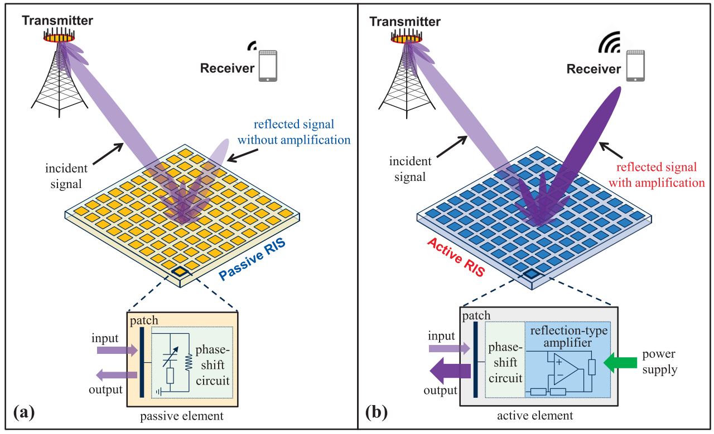
Fig. 1 · PDF p. 3 J1Active RIS vs. Passive RIS: Which Will Prevail in 6G?
IEEE Transactions on Communications, vol. 71, no. 3, pp. 1707–1725, Mar. 2023.
(ESI Top 0.1% Hot Paper & ESI Top 1% Highly Cited Paper)
-
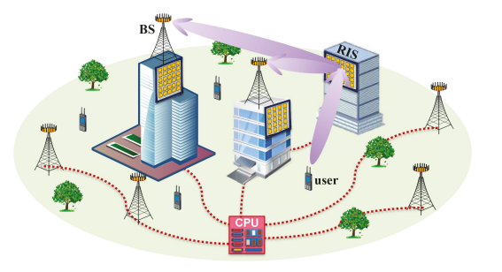
Fig. 1 · PDF p. 3 J2A Joint Precoding Framework for Wideband Reconfigurable Intelligent Surface-Aided Cell-Free Network
IEEE Transactions on Signal Processing, vol. 69, pp. 4085–4101, 2021.
(ESI Top 1% Highly Cited Paper & IEEE SPS Best Paper Award)
-
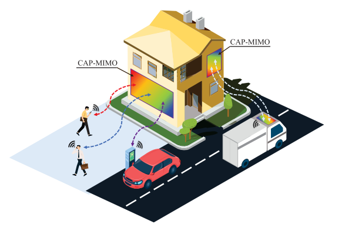
Fig. 1 · PDF p. 1 J3Pattern-Division Multiplexing for Multi-User Continuous-Aperture MIMO
IEEE Journal on Selected Areas in Communications, vol. 41, no. 8, pp. 2350–2366, Aug. 2023.
-
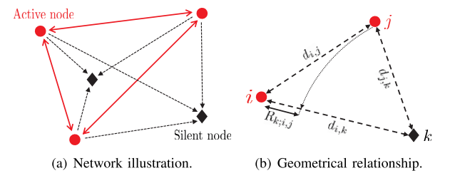
Fig. 1 · PDF p. 1 J4Signal-Multiplexing Ranging for Network Localization
IEEE Transactions on Wireless Communications, vol. 21, no. 3, pp. 1694–1709, Mar. 2022.
-
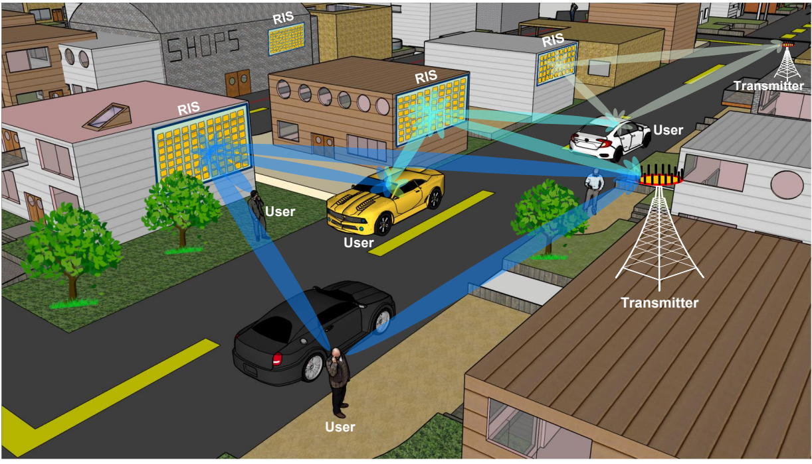
Fig. 1 · PDF p. 2 J5Reconfigurable Intelligent Surfaces for 6G: Nine Fundamental Issues and One Critical Problem
Tsinghua Science and Technology, vol. 28, no. 5, pp. 929–939, Oct. 2023.
(TST Best Paper Award & TST Excellent Paper Award)
-
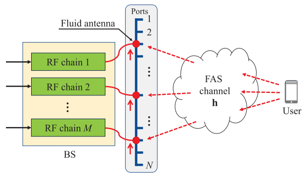
Fig. 1 · PDF p. 3 J6Successive Bayesian Reconstructor for Channel Estimation in Fluid Antenna Systems
IEEE Transactions on Wireless Communications, vol. 24, no. 3, pp. 1992–2006, Mar. 2025.
(ESI Top 1% Highly Cited Paper)
-
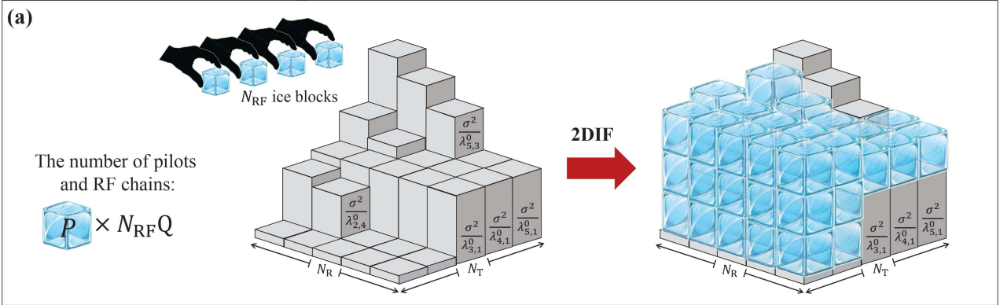
Fig. 2(a) · PDF p. 8 J7Observation Matrix Design for Densifying MIMO Channel Estimation via 2D Ice Filling
IEEE Transactions on Signal Processing, vol. 74, pp. 798–814, 2026.
-
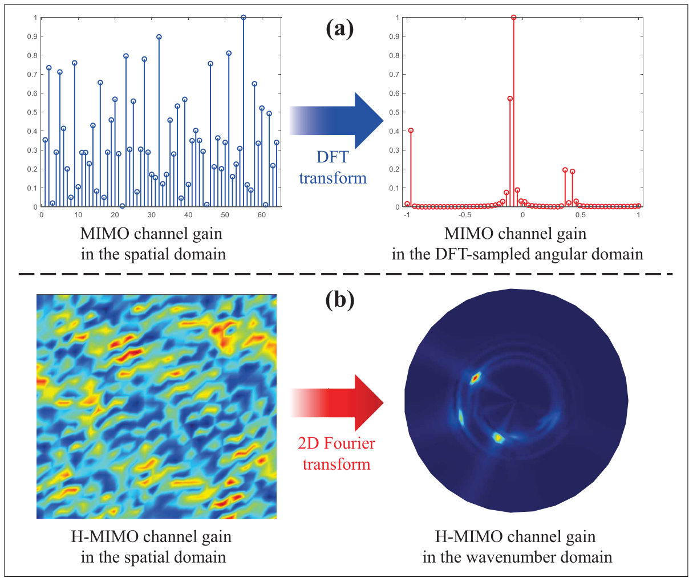
Fig. 2 · PDF p. 3 J8Wavenumber-Domain Signal Processing for Holographic MIMO: Foundations, Methods, and Future Directions
IEEE Communications Standards Magazine, vol. 10, no. 2, pp. 127–133, Jun. 2026.
-
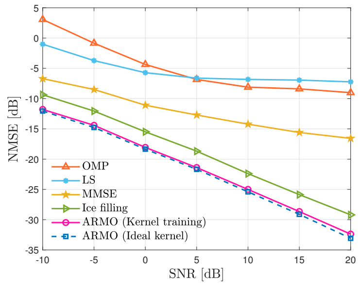
Fig. 1 · PDF p. 5 J9Enhancing Channel Estimation in RIS-aided Systems via Observation Matrix Design
IEEE Transactions on Vehicular Technology, Early Access, 2026.
-
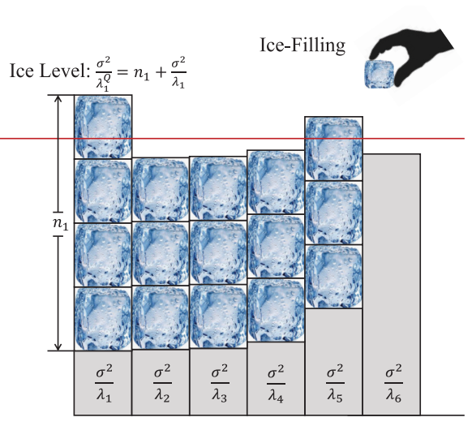
Fig. 3 (ice-filling panel) · PDF p. 6 J10Ice-Filling: Near-Optimal Channel Estimation for Dense Array Systems
IEEE Transactions on Wireless Communications, vol. 24, no. 10, pp. 8551–8564, Oct. 2025.
-
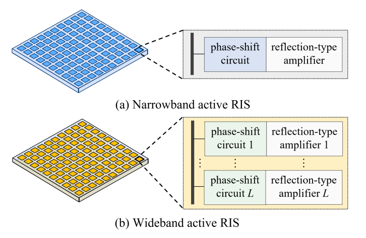
Fig. 1 · PDF p. 2 J11Wideband Active RISs: Architecture, Modeling, and Beamforming Design
IEEE Communications Letters, vol. 27, no. 7, pp. 1899–1903, Jul. 2023.
-
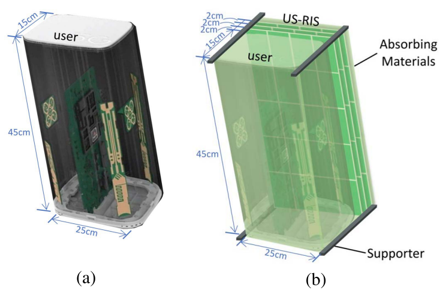
Fig. 2 · PDF p. 3 J12Compact User-Specific Reconfigurable Intelligent Surfaces for Uplink Transmission
IEEE Transactions on Communications, vol. 70, no. 1, pp. 680–692, Jan. 2022.
-
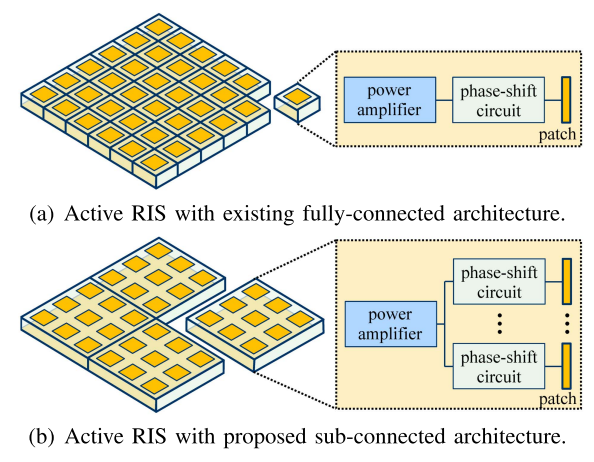
Fig. 1 · PDF p. 2 J13Active Reconfigurable Intelligent Surface: Fully-Connected or Sub-Connected?
IEEE Communications Letters, vol. 26, no. 1, pp. 167–171, Jan. 2022.
(ESI Top 1% Highly Cited Paper)
-
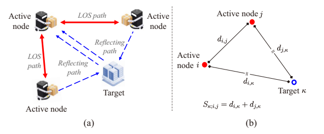
Fig. 1 · PDF p. 1 J14A Signal-Multiplexing Ranging Scheme for Integrated Localization and Sensing
IEEE Wireless Communications Letters, vol. 11, no. 8, pp. 1609–1613, Aug. 2022.
-
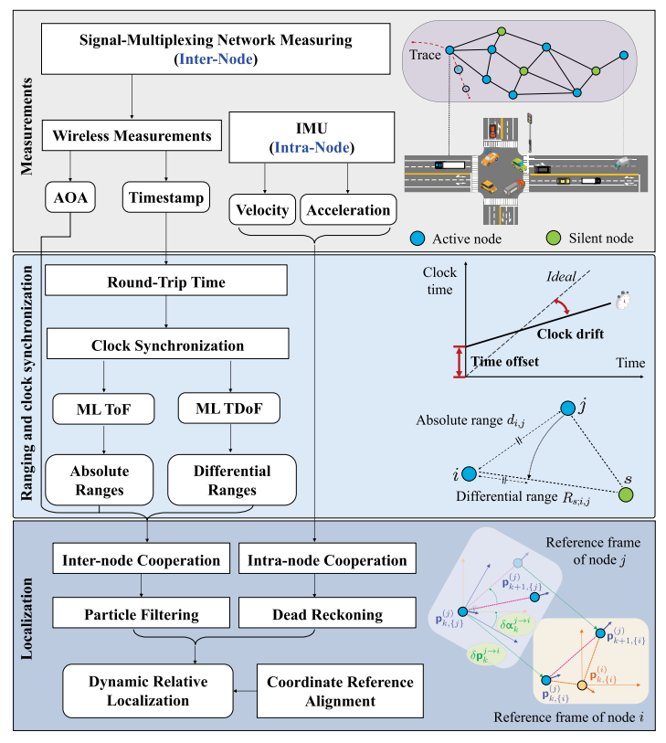
Fig. 1 · PDF p. 2 J15Enhancing Timeliness in Asynchronous Vehicle Localization: A Signal-Multiplexing Network Measuring Approach
IEEE Transactions on Intelligent Transportation Systems, vol. 25, no. 10, pp. 13729–13743, Oct. 2024.
-
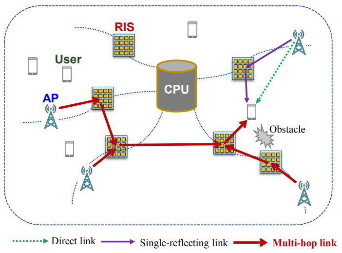
Fig. 1 · PDF p. 3 J16Joint Beamforming Design for RIS-Assisted Cell-Free Network with Multi-Hop Transmissions
Tsinghua Science and Technology, vol. 28, no. 6, pp. 1115–1127, Dec. 2023.
-
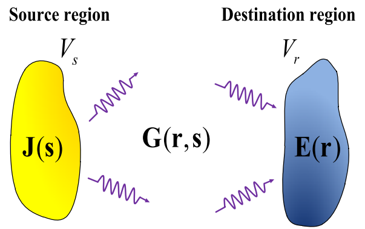
Fig. 1 · PDF p. 2 J17Mutual Information for Electromagnetic Information Theory Based on Random Fields
IEEE Transactions on Communications, vol. 71, no. 4, pp. 1982–1996, Apr. 2023.
-
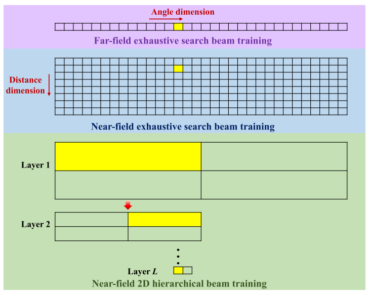
Fig. 2 · PDF p. 8 J18Hierarchical Beam Training for Extremely Large-Scale MIMO: From Far-Field to Near-Field
IEEE Transactions on Communications, vol. 72, no. 4, pp. 2247–2259, Apr. 2024.
-
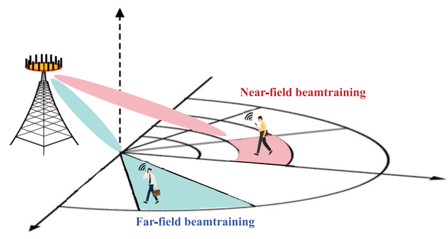
Fig. 1 · PDF p. 3 J19Near-Optimal Near-Field Beam Training: From Searching to Inference
IEEE Transactions on Wireless Communications, vol. 24, no. 11, pp. 9173–9185, Nov. 2025.
-
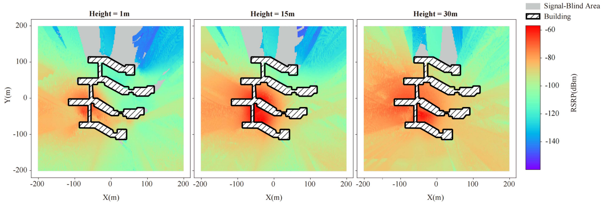
Fig. 5 · PDF p. 5 J20High-Efficiency Urban 3D Radio Map Estimation Based on Sparse Measurements
IEEE Transactions on Vehicular Technology, vol. 74, no. 10, pp. 16488–16493, Oct. 2025.
-
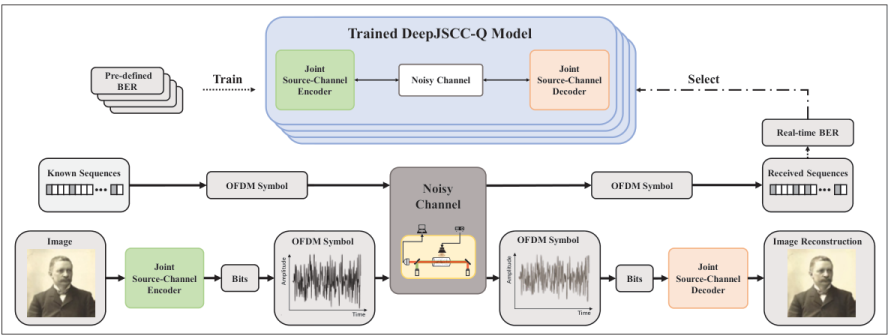
Fig. 3 · PDF p. 5 J21Rydberg Atomic Receivers for Net-Zero 6G Wireless Communication and Sensing: Progress, Experiments, and Sustainable Prospects
IEEE Communications Magazine, vol. 64, no. 8, pp. 52–59, Aug. 2026.
Conference Papers
-
C1
Active RISs: Signal Modeling, Asymptotic Analysis, and Beamforming Design
in Proc. 2022 IEEE Global Communications Conference (GLOBECOM 2022), Rio de Janeiro, Brazil, pp. 1618–1624, Dec. 2022.
-
C2
Pattern-Division Multiplexing for Continuous-Aperture MIMO
in Proc. 2022 IEEE International Conference on Communications (ICC 2022), Seoul, South Korea, pp. 3287–3292, May 2022.
(ComSoc Student Grant)
-
C3
Capacity Improvement in Wideband Reconfigurable Intelligent Surface-Aided Cell-Free Network
in Proc. 2020 IEEE 21st International Workshop on Signal Processing Advances in Wireless Communications (SPAWC 2020), Atlanta, GA, USA, pp. 1–5, May 2020.
-
C4
High-Efficient Ranging Algorithms for Wireless Sensor Network
in Proc. 2019 11th International Conference on Wireless Communications and Signal Processing (WCSP 2019), Xi’an, China, pp. 1–6, Oct. 2019.
-
C5
Successive Bayesian Reconstructor for FAS Channel Estimation
in Proc. 2024 IEEE Wireless Communications and Networking Conference (WCNC 2024), Dubai, United Arab Emirates, pp. 1–5, Apr. 2024.
-
C6
Two-Dimensional Ice Filling Based Channel Estimation in Densifying MIMO Systems
in Proc. 2025 IEEE International Conference on Communications (ICC 2025), Montreal, Canada, pp. 4750–4755, Jun. 2025.
-
C7
User-Side RIS: Realizing Large-Scale Array at User Side
in Proc. 2021 IEEE Global Communications Conference (GLOBECOM 2021), Madrid, Spain, pp. 1–6, Dec. 2021.
-
C8
On The Energy-Efficiency Fairness of Reconfigurable Intelligent Surface-Aided Cell-Free Network
in Proc. 2021 IEEE 93rd Vehicular Technology Conference (VTC 2021-Spring), Helsinki, Finland, pp. 1–6, Apr. 2021.
-
C9
Channel Estimation for Dense Array Systems via Ice-Filling
in Proc. 2025 IEEE International Conference on Communications Workshops (ICC Workshops 2025), Montreal, Canada, pp. 794–799, Jun. 2025.
-
C10
On Finite-Time Mutual Information
in Proc. 2022 IEEE International Symposium on Information Theory (ISIT 2022), Espoo, Finland, pp. 2910–2915, Jun. 2022.
-
C11
Channel Estimation for Non-Stationary Extremely Large-Scale MIMO
in Proc. 2023 IEEE 97th Vehicular Technology Conference (VTC 2023-Spring), Florence, Italy, pp. 1–5, Jun. 2023.
-
C12
Near-Field 2D Hierarchical Beam Training for Extremely Large-Scale MIMO
in Proc. 2023 IEEE Global Communications Conference (GLOBECOM 2023), Kuala Lumpur, Malaysia, pp. 7176–7181, Dec. 2023.
-
C13
Distance-Aware Precoding for Near-Field Capacity Improvement in XL-MIMO
in Proc. 2022 IEEE 95th Vehicular Technology Conference (VTC 2022-Spring), Helsinki, Finland, pp. 1–5, Jun. 2022.
-
C14
Low-Overhead Near-Field Beam Training Based on Bayesian Regression
in Proc. 2025 IEEE International Conference on Communications (ICC 2025), Montreal, Canada, pp. 1724–1729, Jun. 2025.
Demos & Other Contributions
-
O1
Active reconfigurable intelligent surface aided wireless communication prototype
Demonstration at 2022 IEEE Global Communications Conference (GLOBECOM 2022), Rio de Janeiro, Brazil, Dec. 2022.
-
O2
Active reconfigurable intelligent surface aided wireless communication prototype
Demonstration at 2023 IEEE Global Communications Conference (GLOBECOM 2023), Kuala Lumpur, Malaysia, Dec. 2023.
-
O3
Tinker@Home 2019 team description paper
Team description paper, RoboCup@Home 2019, Open Platform League, 2019.
International Patents
-
IP1
Low-power-consumption reconfigurable intelligent surface hardware structure, and precoding method and apparatus
PCT international patent application · Application no.: PCT/CN2022/102301
Application publication: WO2023071264A1 · 4 May 2023Published application
-
IP2
Wireless telecommunications network
PCT international patent application · Application no.: PCT/CN2021/077059
Application publication: WO2022174418A1 · 25 Aug. 2022Published application
-
IP3
Resource allocation and precoding method and apparatus for cell-free network capable of achieving energy efficiency equilibrium
PCT international patent application · Application no.: PCT/CN2021/112812
Application publication: WO2022262104A1 · 22 Dec. 2022Published application
-
IP4
Wireless telecommunications network including a multi-layer transmissive reconfigurable intelligent surface
PCT international patent application · Application no.: PCT/EP2022/051724
Application publication: WO2022175035A1 · 25 Aug. 2022Published application
-
IP5
Wireless telecommunications network including a multi-layer transmissive reconfigurable intelligent surface
U.S. patent · Application no.: US18/277,668
Application publication: US20240039592A1 · 1 Feb. 2024Granted Grant publication: US12028139B2 · 2 Jul. 2024
-
IP6
Wireless telecommunications network including a multi-layer transmissive reconfigureable intelligent surface
European patent · Application no.: EP22704879.0
Application publication: EP4295492A1 · 27 Dec. 2023Granted Grant publication: EP4295492B1 · 9 Oct. 2024
Chinese Patents
-
CN1
Resource allocation and precoding method and apparatus for energy-efficiency fairness in cell-free networks
Chinese patent application · Application no.: CN202110673957.2
Application publication: CN113473499A · 1 Oct. 2021Published application
-
CN2
Low-power intelligent metasurface hardware structure, precoding method, and apparatus
Chinese patent · Application no.: CN202111271506.2
Application publication: CN114040478A · 11 Feb. 2022Granted Patent no.: ZL202111271506.2
Grant publication: CN114040478B · 31 Dec. 2024 -
CN3
Joint positioning method and system for wireless networks
Chinese patent · Application no.: CN202110138213.0
Application publication: CN112887906A · 1 Jun. 2021Granted Patent no.: ZL202110138213.0
Grant publication: CN112887906B · 11 Mar. 2022 -
CN4
Relative positioning method for dynamic networks
Chinese patent · Application no.: CN201810258348.9
Application publication: CN108469600A · 31 Aug. 2018Granted Patent no.: ZL201810258348.9
Grant publication: CN108469600B · 30 Jun. 2020 -
CN5
Network ranging method and apparatus
Chinese patent · Application no.: CN202010052977.3
Application publication: CN111262755A · 9 Jun. 2020Granted Patent no.: ZL202010052977.3
Grant publication: CN111262755B · 9 Nov. 2021 -
CN6
Motion planning and cooperative positioning method and apparatus for unmanned vehicle formations
Chinese patent · Application no.: CN201810433350.5
Application publication: CN108664024A · 16 Oct. 2018Granted Patent no.: ZL201810433350.5
Grant publication: CN108664024B · 25 Sep. 2020 -
CN7
Codebook generation method, channel estimation method, apparatus, and storage medium
Chinese patent · Application no.: CN202210112147.4
Application publication: CN116566446A · 8 Aug. 2023Granted Patent no.: ZL202210112147.4
Grant publication: CN116566446B · 5 Sep. 2025 -
CN8
Method and apparatus for determining a phase-shift matrix
Chinese patent application · Application no.: CN202211578453.3
Application publication: CN118174757A · 11 Jun. 2024Published application
-
CN9
RIS and precoding method and apparatus for RIS-assisted OFDM communication systems
Chinese patent · Application no.: CN202310539494.X
Application publication: CN116260501A · 13 Jun. 2023Granted Patent no.: ZL202310539494.X
Grant publication: CN116260501B · 14 Jul. 2023 -
CN10
Distributed positioning and synchronization method for dynamic scenarios
Chinese patent application · Application no.: CN202410254042.1
Application publication: CN118368017A · 19 Jul. 2024Published application
-
CN11
Wireless telecommunications network including a multi-layer transmissive reconfigurable intelligent surface
Chinese patent · Application no.: CN202280015597.X
Application publication: CN116868518A · 10 Oct. 2023Granted Patent no.: ZL202280015597.X
Grant publication: CN116868518B · 27 Sep. 2024